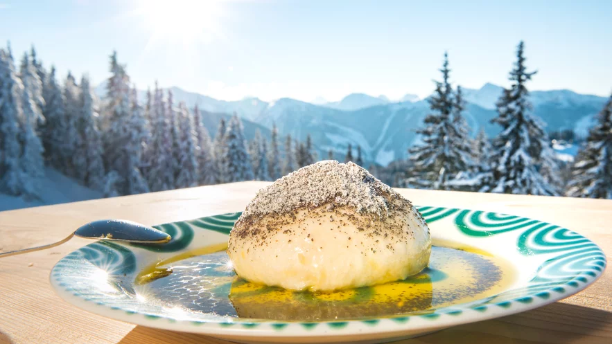
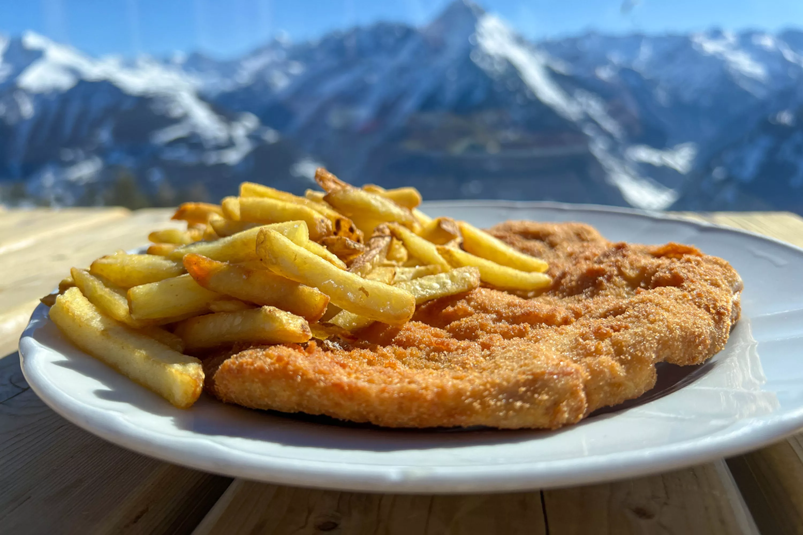
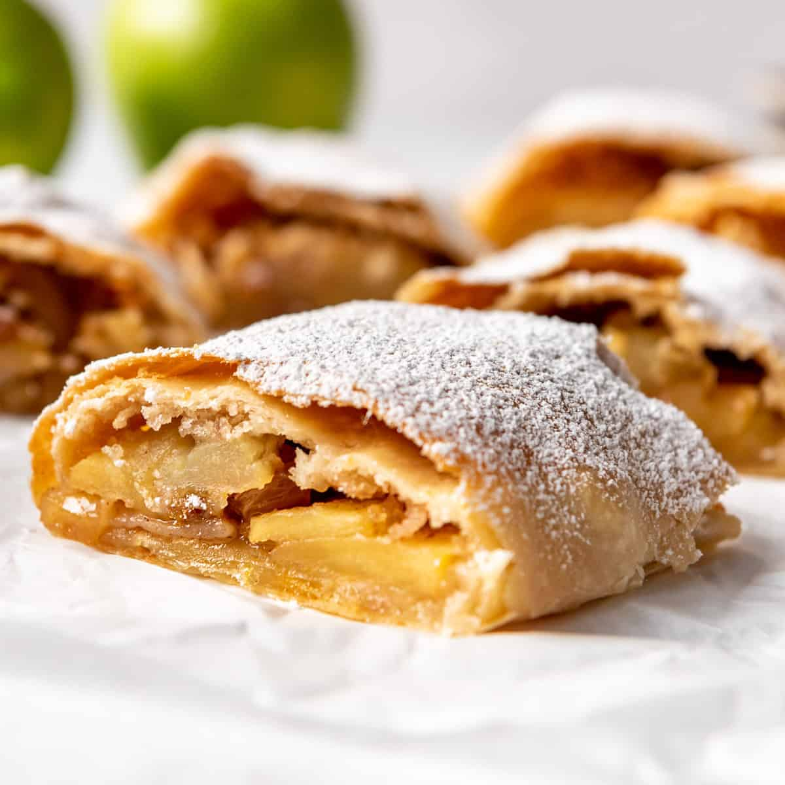
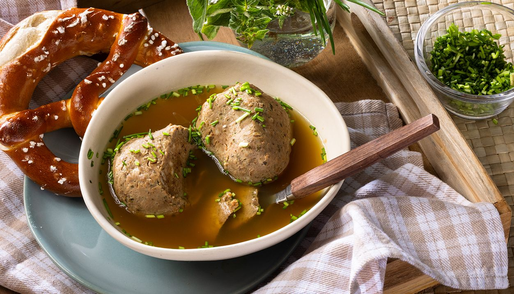
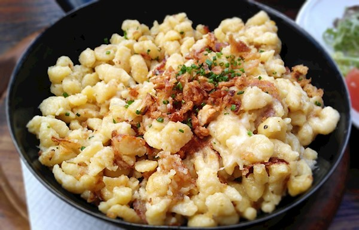

Hütte Ételek
A hütték a síelés ikonikus helyszínei, ahol a síelők megpihenhetnek és élvezhetik a hagyományos alpesi ételeket és italokat.
Próbáld ki a híres osztrák specialitásokat, mint a Kaiserschmarrn vagy a Glühwein!
Egy hütte nem csak az ételről és italról szól, hanem az élményekről és a társasági életről is. A kandalló mellett megosztott történetek, vagy a teraszról nyíló hegyi panoráma felejthetetlen emlékeket nyújtanak.
Sok hüttében élő zene, vagy akár éjszakai partik is várják a vendégeket.
Görgesd tovább a tartalmat, és fedezd fel a legjobb hüttéket az osztrák Alpokban!
Germknödel
Germknödel
Egy gőzgombóc, amely tele van ízletes szilvalekvárral és mákos vaníliamártással tálalják.
Kaiserschmarrn

Kaiserschmarrn
Egy gőzgombóc, amely tele van ízletes szilvalekvárral és mákos vaníliamártással tálalják.
Wienerschnitzel
wiener-schnitzel
Egy gőzgombóc, amely tele van ízletes szilvalekvárral és mákos vaníliamártással tálalják.
Apfelstrudel
Apfelstrudel
Egy gőzgombóc, amely tele van ízletes szilvalekvárral és mákos vaníliamártással tálalják.
Laberknödel
laberknödel
Egy gőzgombóc, amely tele van ízletes szilvalekvárral és mákos vaníliamártással tálalják.
Kasnocken
Kasnocken
Egy gőzgombóc, amely tele van ízletes szilvalekvárral és mákos vaníliamártással tálalják.